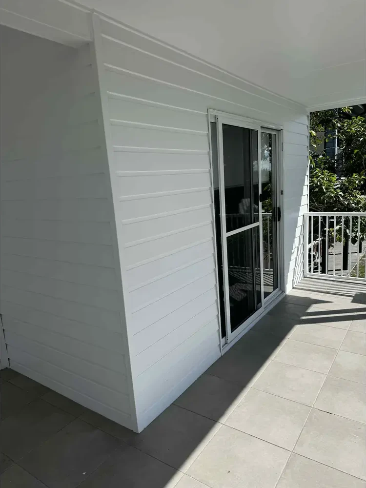

White Weatherboard Exterior Painting in Geelong West
A covered verandah is where the house meets the garden. Here, white horizontal cladding, a white ceiling and light trims give the sliding doors and grey tiles a calm, consistent backdrop.
Get a Free Exterior Painting Quote
Project at a Glance
The Project in Brief
Painters of Geelong carried out an exterior painting project at a home in Geelong West, Victoria. The finished exterior shows horizontal weatherboard-style cladding in white, with a white ceiling, light trims and balustrade, sliding glass doors and grey outdoor tiles in a covered verandah setting.
- Location
- Geelong West, VIC
- Service
- Residential exterior painting
- Surface
- Weatherboard-style horizontal cladding
- Visible finish
- White
- Setting
- Covered outdoor verandah
- Result
- Coordinated white exterior appearance
The Verandah
A Covered Verandah Still Needs Looking After
A covered verandah can be one of the most comfortable places in a Geelong West home. It offers shade, connects the indoor living space with the garden, and provides somewhere to sit outside without being fully exposed to the weather.
But there's something homeowners don't always realise.
Just because an exterior wall sits beneath a roof doesn't mean its paint will stay in good condition indefinitely.
Dust settles along horizontal weatherboard edges. Cobwebs collect near ceilings and corners. Moisture and changing temperatures can affect exterior coatings, and painted surfaces still require inspection and maintenance.
This Geelong West property features white horizontal weatherboard-style cladding, a covered verandah, sliding glass doors and grey outdoor tiles. The finished appearance illustrates how a consistent white exterior can bring these different architectural elements together.
This Exterior
The Details That Make This Exterior Different
Unlike a broad, uninterrupted exterior wall, a covered verandah contains several surfaces close together. At this property, the horizontal cladding meets the ceiling and runs alongside large sliding glass doors. White trims frame these transitions, while grey tiles extend across the floor. This type of arrangement presents practical painting considerations.
Protecting sliding glass doors
Glass panels, door frames, tracks and handles should be protected from paint splashes or overspray. Careful masking is particularly important where exterior cladding finishes close to door frames.
Protecting outdoor floor tiles
Paint splashes and preparation dust can be difficult to remove from some tiled surfaces. Appropriate floor coverings and masking should be planned before painting begins.
Working around weatherboard edges
Horizontal joins and corners need careful preparation and coating coverage. The aim is to achieve a consistent appearance without overlooking details where coatings may deteriorate.
Maintaining a consistent finish
White paint makes differences in sheen, colour and coverage easier to notice under certain lighting conditions. Appropriate surface preparation and application help produce a more unified appearance.
The Challenge
What Makes Painting Weatherboard Exteriors More Demanding?
The overlapping horizontal lines that give weatherboards their character are also where the painting gets demanding. Board edges, joins, corners and the areas around windows and doors all need attention, because they're where coatings tend to fail first. Paint can pool in the board lines or thin out along the edges, so even coverage takes patience as well as the right tools.
The condition of the existing paint matters just as much. Loose, chalky or deteriorating coatings need dealing with before new paint goes on, because painting straight over them can lead to early failure. Depending on the surface, preparation can include cleaning, removing loose paint, sanding, filling gaps and priming bare or repaired areas.
Then there's the cladding itself. Traditional timber weatherboards respond to moisture and temperature changes differently from fibre-cement or composite boards, so the material has to be identified before the primer and finishing system are chosen. An exterior-grade system that suits both the surface and whatever is already on it is what helps the new finish bond and hold up over time.
For homeowners in Geelong West, where traditional weatherboard houses and renovated properties are part of the residential character, understanding the existing surface is an important first step before repainting.
The Finished Project
The Finished Result: A White Weatherboard Verandah in Geelong West
This Geelong West exterior shows the details that shape the outdoor area: white horizontal weatherboard-style cladding, a light ceiling, pale trims and balustrade, and sliding glass doors opening onto grey floor tiles. The white finish appears consistent across the visible cladding, with the individual board profiles and their horizontal shadow lines still clearly defined.
Those board lines matter. They give the wall its character, but they are also the edges and overlaps a painter needs to inspect closely when assessing preparation and coverage. Around the sliding door, the change from painted wall to frame and glass calls for careful edge work; immediately below, tiled flooring makes protection of adjoining surfaces an important part of planning a similar job.
The result shown here is visual continuity rather than a dramatic colour contrast. Light walls and surrounding trims sit comfortably with the ceiling, while the dark glass and grey tiles define the doorway and floor. Sunlight across the tiles makes the sheltered verandah feel bright without losing the texture of the cladding.
For homeowners with a similar Geelong West exterior, the lesson is to look beyond the main wall: board profiles, door surrounds, ceilings and adjoining surfaces all influence how the finished space looks.
What Homeowners Can Learn
What This Project Shows Geelong West Homeowners
The most useful lesson from this exterior painting project is that homeowners should consider the condition and appearance of all the surfaces surrounding an outdoor living area. A verandah wall shouldn't be considered in isolation from its ceiling, trims, doors and adjoining finishes.
Before repainting, homeowners should ask:
- Is the existing paint sound, or are there signs of peeling, chalking or cracking?
- Are there open joints, damaged boards or other defects requiring attention?
- Is the cladding timber, fibre cement or another material?
- Should the ceiling, trims or balustrade be included in the scope?
- How will the painters protect glass doors, tiles and surrounding plants?
- Which coating system is suitable for the actual surfaces?
Answering these questions helps define a painting scope that addresses both the appearance of the exterior and its ongoing maintenance.
Common Exterior Painting Questions
Questions Homeowners Ask About Weatherboard Painting
What makes this Geelong West verandah exterior different from a standard exterior wall?
This covered verandah combines horizontal weatherboard-style cladding, a ceiling, sliding glass doors, surrounding trims and tiled flooring in one compact space. Painting around these features requires careful surface assessment and protection of adjoining materials.
Can old weatherboards be repainted?
Usually, yes, as long as the boards are sound. Loose or flaking paint needs removing, rough areas need sanding, and any rotted or damaged boards need repair or replacement first. Paint protects sound cladding but can't fix failing material.
How often should exterior weatherboard houses be painted?
There's no single interval. It depends on the coating system, how exposed the walls are, the quality of the preparation and how well the finish is looked after. Regular inspection is more reliable than a calendar: fading, chalking, peeling, cracking and open joins all signal that the coating needs attention.
What preparation is needed before exterior weatherboard painting?
Typically cleaning, removing loose coatings, sanding, filling gaps or defects, and priming bare or repaired areas. The exact steps depend on the cladding material and the condition of the existing paint.
Is timber weatherboard painting different from fibre-cement cladding painting?
Yes. Timber moves with moisture and may need bare areas primed, gaps filled and tannin staining managed. Fibre-cement and composite boards are more stable but have their own coating and edge-sealing requirements. Identifying the material first is what guides the primer and paint choice.
What paint finish works best for white exterior cladding?
An exterior-grade acrylic system is commonly used on cladding. Low-sheen or satin finishes are often chosen for walls, with a harder-wearing semi-gloss for trims and doors. White shows dirt and mould more readily than darker colours, so a quality system and an occasional clean help it stay fresh.
Can verandah ceilings and trim be included in exterior painting?
Yes. Verandah ceilings, trims, balustrades and door frames are commonly painted alongside the cladding as part of an exterior house painting job. Agree the scope when you get a quote so everything you want covered is included.
How much does weatherboard painting cost in Geelong?
There isn't a fixed price. Cost depends on the size and height of the house, access, the cladding material, the condition of the existing paint, the preparation needed, the number of coats and how much trim is included. A quote after an on-site look is the most reliable guide.
How do painters protect sliding doors, tiles and gardens?
Frames and glass are masked, tiles and paving are covered with drop sheets, and garden beds and plants are covered or tied back where practical. How much protection is needed depends on the application method, so spraying calls for more masking than brushing and rolling.
Related Painting Services and Projects
Keep Exploring
Considering Exterior Painting for Your Geelong West Home?
If your weatherboards, verandah walls or exterior trims are beginning to look tired, the best starting point is a professional assessment. Painters of Geelong provides exterior painting services for homeowners across Geelong, including Geelong West.
Explore our professional exterior house painting services in Geelong to learn more about surface preparation, exterior finishes and arranging a painting quote.